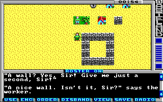

Game Tutorial Step 9: Altering multiple squares
Action class 12 (c) can be used to change the action class and action of multiple squares at once. This is used for example to enable the hidden passage in Faran Brygo's hideout. In this example we will create a worker which will build us a nice wall faster than you can blink.
Find a place on the map to put the worker on and set this square to action class c, action 00 and tile 0c. Then create the alteration code:
<actions actionClass="0xc">
<alteration id="0" message="12" newActionClass="1" newAction="3">
<alter relative="true" x="1" y="0" newActionClass="4" newAction="1" />
<alter relative="true" x="2" y="0" newActionClass="4" newAction="1" />
<alter relative="true" x="3" y="0" newActionClass="4" newAction="1" />
<alter relative="true" x="4" y="0" newActionClass="4" newAction="1" />
<alter relative="true" x="4" y="1" newActionClass="4" newAction="1" />
<alter relative="true" x="4" y="2" newActionClass="4" newAction="1" />
<alter relative="true" x="4" y="3" newActionClass="4" newAction="1" />
<alter relative="true" x="3" y="3" newActionClass="4" newAction="1" />
<alter relative="true" x="2" y="3" newActionClass="4" newAction="1" />
<alter relative="true" x="1" y="3" newActionClass="4" newAction="1" />
<alter relative="true" x="1" y="2" newActionClass="4" newAction="1" />
<alter relative="true" x="1" y="1" newActionClass="4" newAction="1" />
</alteration>
</actions>
Wow, lot of code. But what's it for? The message attribute defines a message string which is displayed when you step on the square. Then the child alter elements are executed. You may already be able to read them without further description but I explain anyway: The relative attribute defines if the x and y coordinates are relative or absolute. And newActionClass and newAction defines to which new action class and action we want to set the square referenced with the x and y coordinates. In this case we set lots of squares to the a new mask action you need to add to the action container of action class 4:
<actions actionClass="4"> <mask id="1" message="13" tile="54" impassable="true" /> </actions>
This mask action just masks a square with a wall tile which is impassable and prints message 13 when you bump into it.
Now back to the alteration code. The alteration tag itself also has a newActionClass and newAction attribute. This defines the replacement for the current square after the alteration has finished. In this case we set the square to a new print action you have to add to action class 1:
<print id="3"> <message>14</message> </print>
Add the new strings and you are done:
<string id="12">\r"A wall? Yes, Sir! Give me just a second, Sir!"\r</string> <string id="13">\rA nice wall made of stone.\r</string> <string id="14">\r"A nice wall. Isn't it, Sir?" says the worker.\r</string>
Pack the game and start up Wasteland. When you now step on the square where you put the worker he will create the wall. When you visit the worker again he will just tell you about the nice wall and that's it.
You can download the current state of the map here: map01.xml.
